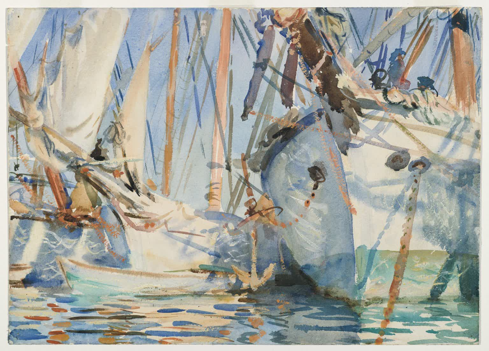

SFU math undergraduate, Burnaby. 🌺
White Ships, John Singer Sargent, 1908.
mail: anne@bunnygirl.ca
discord: glendarabbit
I am interested in mathematics, computers (their operating systems and compilers in particular), and languages (human, computer, or otherwise).
Visit my girlfriend's website.
copyright Anne Avery 2024
text under CC BY-SA 4.0; source code under MIT